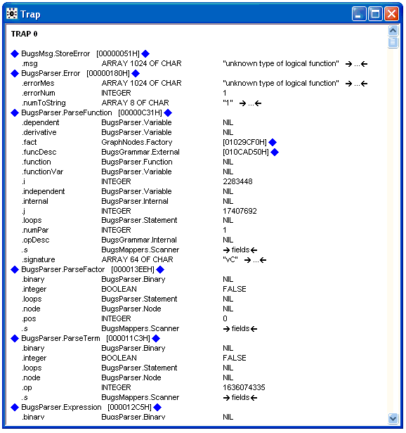

Tips and troubleshooting
Restrictions when modelling
Restrictions have been stated throughout this manual. A summary list is as follows:
a) Each stochastic and logical node must appear once and only once on the left-hand-side of an expression. The only exception is when carrying out a data transformation (see
Data transformations). This means, for example, that it is generally not possible to give a distribution to a quantity that is specified as a logical function of an unknown parameter.
b) Truncated sampling distributions cannot be handled using the
C(.,.) construct - see
BUGS language: stochastic nodes.
c) Multivariate distributions: Wishart distributions may only be used as conjugate priors and must have known parameters; multivariate normal and Student-t distributions can be used anywhere in the graph (i.e. as prior or likelihood) and there are no restrictions regarding their parameters. See
BUGS language: stochastic nodes.
d) Logical nodes cannot be given data or initial values. This means, for example, that it is not possible to model observed data that is the sum of two random variables. (See
Logical nodes.)
Some error messages
In general BUGS tries to give informative, easily understood error messages when there is a problem with the model specification, the data or initial values, or if problems occur with the sampling algorithms. However sometimes numerical problems occur with the sampling algorithms, when this happens a trap message is produced providing a detailed trace back to where the error occurs.
When an error occurs in the syntax of the model specification or in the data or initial values the position of the error will be marked by changing the nearest symbol in the relevant window to inverse video, you must make sure the title bar of this window is selected to be able locate the position of the error. Errors can still occur with a model even if it is syntactically correct. When this happens the error message contains the name of the variable for which the error occurs.
Some common error messages are:
a)
'expected variable name' indicates an inappropriate variable name, for example a variable name in a data set is not a variable name in the model.
b)
'linear predictor in probit regression too large' indicates numerical overflow. See possible solutions below for Trap 'undefined real result'.
c)
'logical expression too complex' - a logical node is defined in terms of too many parameters/constants or too many operators: try introducing further logical nodes to represent parts of the overall calculation; for example, a1 + a2 + a3 + b1 + b2 + b3 could be written as A + B where A and B are the simpler logical expressions a1 + a2 + a3 and b1 + b2 + b3, respectively. Note that linear predictors with many terms should be formulated by 'vectorizing' parameters and covariates and by then using the inprod(.,.) function (see
Logical nodes).
d)
'invalid or unexpected token scanned' - the parser has encountered an unexpected symbol, for example if using a Doodle check that the
value field of a logical node has been completed.
e)
'unable to choose update method' indicates that a restriction in the program has been violated - see
Restrictions when modelling above.
f)
'undefined variable' - undefined variables are allowed in the model so long as they are not used on the right hand side of a relation.
g)
'index out of range' - usually indicates that a loop-index goes beyond the size of a vector (or matrix dimension).
In rare cases
BUGS is unable to find a suitable sampling algorithm for a node in the model. The error message
'Unable to choose update method for node x' will be displayed where x is the node for which
BUGS can not find an update method.
Trap windows
Trap windows occur when a problem with the BUGS software is detected by the run time system. The run time system is a small piece of software that watches the main program (BUGS) and reports if some illegal action occurs. The first line of the trap windows gives a description of the type of illegal action detected by the run time system. Note that a trap window is different form an error message. It can be thought of as an error in the use of the BUGS software that should have produced an error message but for which the error handling code does not exist / work.
The trap window contains detailed information to help locate the position of the problem in the source code plus information about what was happening at the time the error occurred. The information in the trap window is arranged in three columns, each column can contain blue diamonds (see the developer manual for more details on blue diamonds). The first column contains procedure names and underneath the procedure name local variables in that procedure. The second column contains information on the type of the local variable. The third column gives the value of the local variable. The first procedure in the left hand column is where the error causing the trap occurred, clicking on the blue diamond in the second column on a level with this procedure name will open a window showing the source code of the procedure and the exact position where the error occurred. The second procedure name in the first column is the procedure which called the procedure where the error occurred and so on. The blue diamonds on the left side of the first column give information about global variables in the module which encloses the procedure, clicking on these blue diamonds will open a new window showing the global variable. Blue diamonds to the right of the third column give information about pointer type variables, while the folds like
fields give information about structured variables.
A section of a typical trap widow is shown below (in this case
TRAP 0 is a special, deliberate -that is programmed - error).

Some common illegal actions detected by the run time system are:
a)
'undefined real result' indicates numerical overflow. Possible reasons include:
- initial values generated from a 'vague' prior distribution may be numerically extreme - specify appropriate initial values;
- numerically impossible values such as log of a non-positive number - check, for example, that no zero expectations have been given when Poisson modelling;
- numerical difficulties in sampling. Possible solutions include:
- better initial values;
- more informative priors - uniform priors might still be used but with their range restricted to plausible values;
- better parameterisation to improve orthogonality;
- standardisation of covariates to have mean 0 and standard deviation 1.
- can happen if all initial values are equal.
b)
'index array out of range' - possible reasons include:
- attempting to assign values beyond the declared length of an array;
c)
'stack overflow' can occur if there is a recursive definition of a logical node.
d)
'NIL dereference (read)' can occur at compilation in some circumstances when an inappropriate transformation is made, for example an array into a scalar.
e)
argument of sqrt must not be negativethe square root of a negative number has been taken, this occurs if the precision matrix of a multivariate normal is not positive definite.
The program hangs
This could be due to:
a) a problem that seems to happen with Windows NT - rebooting is a crude way out;
b) interference with other programs running - try to run WinBUGS on its own;
c) a particularly ill-posed model - try the approaches listed above under Trap messages.
Speeding up sampling
The key is to reduce function evaluations by expressing the model in as concise a form as possible. For example, take advantage of the functions provided and use nested indexing wherever possible. Look at the packaged examples and others provided on users' web sites.
Improving convergence
Possible solutions include:
a) better parameterisation to improve orthogonality of joint posterior
b) standardisation of covariates to have mean 0 and standard deviation 1
c) use of ordered over-relaxation.
For other problems, try the FAQ pages of the web site (http://openbugs.info).